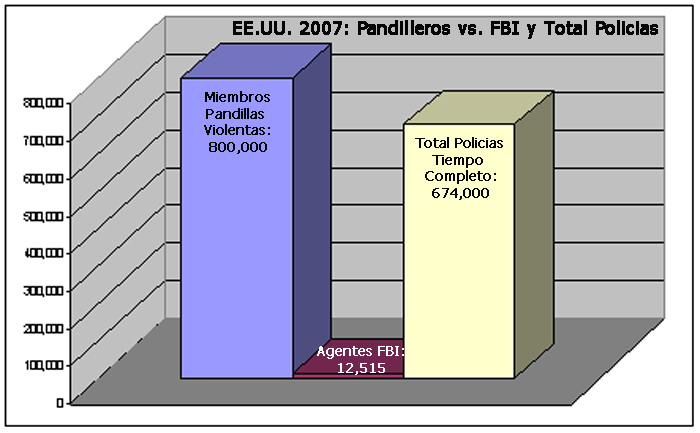
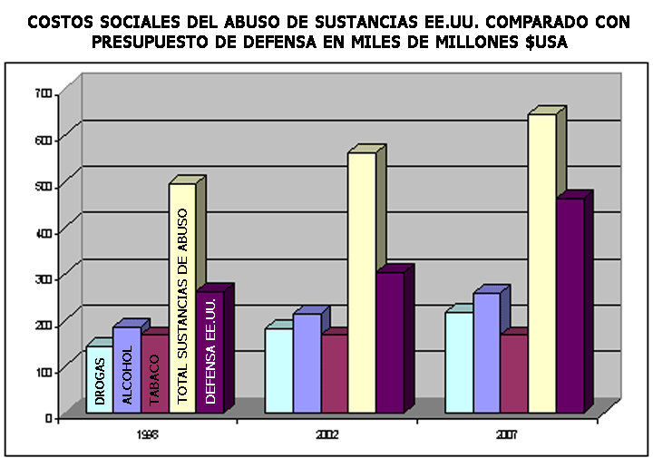
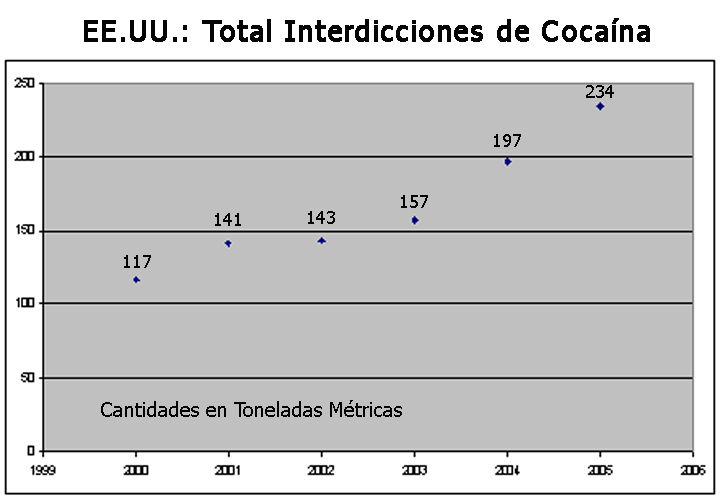
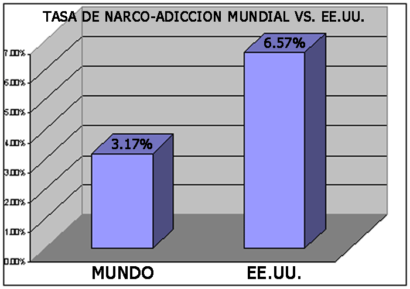

La historia confirma que la guerra es causa y consecuencia de muchos períodos históricos. La revolución francesa, por ejemplo, es la guerra que da lugar al nacimiento de la era moderna; igualmente se podría argumentar que la guerra del Vietnam jugó un papel decisivo en la creación de la historia americana postmoderna, talvez sirviendo para dar a luz al postmodernismo americano mismo. Cualquiera que estudie la historia debe aceptar como hecho la prominencia que la guerra ha desempeñando a lo largo de la existencia de nuestra especie. “La guerra es de máxima importancia para el estado,” dice Sun Tzu, “su estudio es el camino a la supervivencia o a la extinción y por lo tanto no puede ser despreciado.” La guerra no es solamente común, frecuente, y a menudo un estado definidor de la humanidad, sino que requiere una gran preparación mental, física y filosófica-espiritual. La guerra y su preparación triunfante requiere para su desempeño una condición de elaboración, una claridad de propósito, una singularidad de dedicación que en muchas culturas han sido vinculadas a tradiciones de profunda espiritualidad, particularmente en las culturas aborígenes o indígenas, y también en las culturas del extremo oriente. Los arquetipos del guerrero-monje o del guerrero-chamán están bien representados a lo largo de las tradiciones culturales del mundo.
Dadas las implicaciones severas de lo que la guerra representa para una nación, no es sorprendente que los grandes maestros del arte de la guerra han sido venerados a través del tiempo. Nunca hemos estado en mayor necesidad de la sabiduría de estos maestros de estrategia que en la denominada era postmoderna de hoy en día. Estamos todos en un estado de guerra donde no hay fronteras ni enemigos distinguibles; no hay reglas de combate ni armas predilectas; no hay campos de batalla específicos, ni adversarios particulares donando sus uniformes diferentes o mostrando sus banderas de identificación; pero aun así estamos en guerra. No es del terrorismo internacional del que hablo, ya que en ese conflicto hay adversarios, oponentes, intereses, ideologías, y bandos. Hoy estamos en guerra con el caos que caracteriza y domina el mundo en el cual vivimos; estamos asediados por la absurdidad ubicua que se manifiesta universalmente a través de nuestras sociedades, de nuestras instituciones, y de nuestras comunidades. Este caos y esta absurdidad se han convertido tan comunes en nuestras vidas, tan sobrecogedoras, tan abrumadoras para nuestros sentidos, tan despectivos de nuestros poderes de la razón que exigen nada menos que una capitulación total de nuestras mentes, una rendición completa de nuestra psique, de nuestro espíritu, de nuestra humanidad. Visto así no es de sorprender que recurramos a estupefacientes y soporíferos mentales en un intento desesperado de advertir nuestra conciencia de la realidad que nos rodea y que en muchos casos amenaza a definir quiénes somos.
Mucha de mi existencia se pasa inmersa en medio de este caos, de esta absurdidad, tomando el pulso de su línea delantera, luchando para resucitar a sus víctimas más desesperadas. Actualmente mi tiempo se divide entre una ciudad mexicana llamada Tijuana y su hermana San Diego, ambas situadas a lados opuestos de la frontera de los EE.UU. y de México al sur de California. Entre otras cosas trabajo haciendo mi residencia pre-doctoral en psicología clínica y forense en una institución de detención juvenil femenina en San Diego. Allí, como miembro del equipo de intervención de crisis del departamento de psicología forense juvenil de la Agencia Humana y de Salud del condado de San Diego atiendo a la psique de ofensoras juveniles femeninas que han sido asignadas a mi cargo. Por lo menos el 95% de las chicas en ese centro se podrían dividir a grosso modo en cuatro categorías traslapantes: narco-adictas y alcohólicas en recuperación, narcotraficantes, pandilleras (declaradas y 'afiliadas'), y finalmente prostitutas.
Es una residencia clínica que escogí de entre muchas otras posibles ya que traía conmigo ‘atributos’ que son definitivamente ventajosos. Para comenzar, soy un hispanohablante nativo de descendencia Española, Africano-Americana, y Amerindia; la mayoría de las residentes son Latinas, ciudadanas de México o Mexicanas-Americanas, lo que significa una mezcla racial y étnica Español-India; hay también una buena representación de afro-americanas, aunque por debajo del promedio nacional para una institución de este tipo dada la demografía racial del condado de San Diego. La segunda característica que aporto es que no soy exactamente un ‘extraño’ a la mentalidad de ‘barrio’ de mis pacientes: la conozco de raíz y en propia persona. Mi género y mi edad también son grandes ventajas: virtualmente todas estas chicas están desesperadamente carentes de una figura positiva de padre en sus vidas, un varón mayor que no busca explotarlas ni sexual ni físicamente. Mi fondo étnico-racial, mi capacidad lingüística, mi experiencia de vida, y mi género y edad combinados me permiten crear una profunda relación paciente-terapeuta mucho más rápido de lo que se esperaría de un hombre trabajando en una institución femenina con pacientes victimas de abuso sexual y de violación. Estas sesiones terapéuticas son encuentros en las cuales las chicas están libres para discutir los detalles más íntimos de sus vidas que han guardado como secretos, ya vergonzosos ya siniestros, del resto del mundo.
Uno podría preguntarse la importancia que esta experiencia tiene en cuanto a la sociedad en general; uno podría querer argüir que éstos individuos, y los de otras instituciones como ésta a lo largo del país, forman un segmento tan pequeño de la población que cualquier conclusión que uno derive de sus casos no podría reflejar la sociedad en su totalidad; se podría pensar que estos individuos representan no a la sociedad en sí misma, sino a los rechazos de nuestra sociedad; que constituyen las excepciones de las cuales la sociedad intenta protegerse, distanciarse, y despojarse. Estarían lamentablemente equivocados. Hay un número de características de esta población que son profundamente representativas de quiénes somos y de dónde estamos como nación, como continente, como civilización, y quizás incluso como especie. Trabajando con estas chicas me ha enseñado mucho sobre el mundo en el cuál vivimos, y me ha hecho poner más atención en los síntomas de una realidad que no puedes ver a menos que sepas ya que existe. Nuestra sociedad americana, y quizás nuestra civilización occidental entera, está experimentando una denegación patológica de la realidad que nos rodea y define, de una realidad que describe dónde estamos, nuestro stasis, y quienes somos, nuestra auto-identidad. Juntos, el stasis y la auto-identidad son facetas de una misma moneda: quién eres muchas veces es un reflejo de dónde estás, y viceversa. Además, nuestras culturas y sociedades son un reflejo acumulativo de sus componentes individuales, y los individuos que las constituyen son igualmente representaciones del colectivo.
Hay por lo menos 11 factores que caracterizan a muchas de las pacientes en esta institución, y estos mismos factores están al centro de lo que anda mal en la sociedad norteamericana: a) afiliaciones criminales; b) un expediente de abuso de sustancias adictivas; c) una ausencia paternal, si no falta de padre por completo; d) una historia de abuso sexual y físico infantil; e) una falta de formación educativa; f) un dedicación profunda al materialismo [1]; g) antecedentes familiares de bajo estatus económico; h) enajenamiento social; i) una ira bordeando en furia desatada; j) antecedentes penales; y finalmente, k) una desesperanza total. En demasiados de estos casos las historias de vida de estas chicas estaban escritas mucho antes de que nacieran: No son los rechazos de una nación, de una sociedad, o de una civilización; son a menudo las víctimas de las mismas, y sus historias constituyen claves, indicios, y trazos de la naturaleza comprobable del mundo en el cuál todos vivimos, del mundo al que todos contribuimos para crear cada día con nuestros comportamientos, hábitos, escogencias, apatía y negligencia.
CHICAS Y CHICOS DEL BARRIO:
Un boletín reciente de la FBI publicó que hay aproximadamente 30,000 pandillas callejeras violentas, de motocicletas, y de prisiones con aproximadamente 800,000 miembros que operan en los Estados Unidos hoy en día. "Muchas de éstas son sofisticadas y están bien organizadas; todas utilizan la violencia para controlar vecindades y para fomentar sus actividades comerciales ilegales que incluyen el tráfico de drogas, el robo, el hurto, el fraude, la extorsión, la prostitución, y el tráfico de armas." [2]
El comunicado oficial de la FBI continúa indicando las varias "estrategias anti-pandillas" que la FBI ha adoptado y que presentó recientemente ante el congreso de los Estados Unidos [3], para lidiar con las pandillas callejeras que son, según el portavoz de la FBI, "más violentas, más organizadas, y más diseminadas que nunca." [4] Lo qué la FBI no menciona es que para llevar a cabo esta tarea cuenta con poco más de 30,000 empleados en total a su disposición y a lo largo de toda la nación (aproximadamente un empleado por cada una de las pandillas violentas en el país), de los cuales solamente un gran total de 12,515 son agentes especiales, o sea, funcionarios dedicados a enfrentarse directamente con las fuerzas de la delincuencia nacional. Ésta es la fuerza con la cual la FBI se propone asegurar las calles de América [5] y lidiar no solamente con las pandillas violentas callejeras, sino con todas sus otras responsabilidades policíacas, tales como el contraespionaje y el contra-terrorismo. De hecho, el cálculo del FBI de 2007 del número de miembros de pandillas callejeras, que lo más probable no incluye a los pandilleros asociados, excede substancialmente en número al total de 674.000 oficiales de policía que trabajan a tiempo completo en todos los EE.UU. [6]
Las pandillas callejeras se han convertido en extremadamente preponderantes en la sociedad de los EE.UU. De acuerdo con una encuesta del Departamento de Justicia en el 2001, el 20% de todos los estudiantes entre las edades de 12 y 18 años reportaron la presencia de pandillas violentas callejeras en sus escuelas en los últimos 6 meses; el 28% de los estudiantes en escuelas urbanas reportaron una presencia de pandillas callejeras; el 18% de los estudiantes en las escuelas suburbanas reportaron lo mismo ese año; finalmente, el 13% de los estudiantes en las escuelas rurales reportaron una presencia de pandillas callejeras en el 2001. [7]
Esta situación solamente pudo haber empeorado en los últimos 6 años ya que el número aproximado de pandillas callejeras subió de 21,500 en el 2001 a 30,000 en el 2007. De hecho, muchos de mis pacientes pertenecen a los 800,000 miembros de pandillas violentas callejeras. Bajo el manto protector de las leyes de confidencialidad entre psicólogo y paciente ellas comparten conmigo muchas de sus hazañas y yo me veo obligado a oír y callar; sin embargo sí diré lo siguiente: en no pocos de estos casos a nadie le gustaría encontrarse a solas y a la merced de muchas de ellas.
Es fácil para un adulto que nunca ha experimentado las pandillas callejeras de niño subestimar o pasar completamente por alto el impacto que una pandilla puede tener en las apreciaciones de un niño del mundo y de sí mismo. Un encuentro aparentemente inocente con un sólo miembro de una pandilla puede llevar a un niño a una serie de experiencias cada vez más violentas y terroríficas, incluso mortíferas, contra las cuáles ni los maestros del colegio, ni los padres, ni aún los oficiales de policía pueden ofrecerles protección. Las pandillas constituyen una sociedad dentro de la sociedad basada en una subversión de nuestras reglas y normas sociales y en dónde la respuesta al caos y a la absurdidad de nuestro mundo postmoderno es un estilo de vida económicamente auto-suficiente basado en la violencia, la falta de empatía y de compasión, el abuso de sustancias intoxicantes, y la criminalidad desenfrenada financiada a menudo por la distribución y la venta de narcóticos ilícitos y de armas de fuego.

FIGURA 1. 2007 Miembros de Pandillas vs. FBI & Oficiales de Policía a Tiempo Completo en los EE.UU.
UNA SOCIEDAD NARCOTIZADA:
Prácticamente todas mis pacientes de esta institución han sido abusadores de sustancias en un algún momento u otro; muchas, si no todas, han participado en la venta y/o el tráfico de narcóticos. Mis conversaciones con mis pacientes durante estas sesiones terapéuticas con respecto a sus actividades narcotraficantes me recuerdan a otro tipo de trabajo que yo hacía hace casi veinte años. Entre finales de los años 80 y principios los 90 yo trabajaba como intérprete de ingles/español mientras que terminaba mi licenciatura en estudios españoles y latinoamericanos, seguido de mi maestría en literatura española y latinoamericana en la universidad de la Queen’s en Kingston, Ontario, Canadá. Mucho de mi trabajo como intérprete en aquellos tiempos se llevaba a cabo para la RCMP, el equivalente canadiense a la FBI, para abogados privados, o para el sistema correccional canadiense en las diversas instituciones de mínima, media y máxima seguridad distribuidas a lo largo de la ciudad de Kingston. A veces trabajaba como un intérprete simultáneo, tarea sorprendentemente exigente y agotadora. Con mayor frecuencia, sin embargo, trabajaba como intérprete cultural para los prisioneros de habla Hispana en la preparación de y durante sus audiencias de libertad provisional.
En general el puesto de intérprete para el Servicio Correccional Canadiense no era fácil llenar. Para comenzar, por aquel entonces habían pocas personas en el área de Kingston suficientemente competentes en el idioma español para poder desempeñar el cargo, y menos aún que pudieran pasar las rigurosas investigaciones de seguridad; y eran aún menos todavía los individuos que, por ejemplo, estuvieran dispuestos a adentrarse en la sala de emergencias médicas de una penitenciaría de máxima seguridad a las 3:00 de la mañana para servir de intérprete a un prisionero que acababa de ser apuñalado y que se está desangrando. Kingston, Ontario no es sólo la capital penitenciaria del Canadá, sino también una de las áreas de mayor contrabando entre los EE.UU. y el Canadá. Como resultado casi todo mi trabajo de intérprete estaba relacionado al narcotráfico; muchos de mis clientes habían sido operativos de los por-aquél-entonces todopoderosos cárteles colombianos. Mi trabajo requería no solamente un dominio de los idiomas español e inglés, sino también un entendimiento a fondo de las culturas hispánicas y anglo-canadienses. Estos individuos tenían que estar preparados para el momento más decisivo de sus vidas: su oportunidad de recuperar su libertad, y el gobierno canadiense quería que estuvieran en plena comprensión de lo que se requería y esperada de ellos durante su audiencia de libertad provisional.
Durante esos años yo me reuní e interpreté para docenas y docenas de narcotraficantes hispanos-americanos: colombianos, mexicanos, chilenos, venezolanos, peruvianos, argentinos, etc. - incluso un ex-oficial de inteligencia cubano; todos ligados a los cárteles de narcotráfico de Latino América. En cuanto a la importancia en sus respectivas operaciones, mis clientes iban desde las humildes mulas medio-analfabetas que habían sido arrestadas cargando con un kilo o menos en alguna cavidad corporal u otra, a los sofisticados y mortíferos tenientes y capos del Cartel de Medellín. Tuve incluso el privilegio de haber interpretado en un audiencia de libertad provisional para la novia de uno de los tenientes principales de Escobar (un primo), arrestado durante lo que resultó ser por aquel entonces la redada de cocaína más grande de la historia del Canadá, una operación de múltiples agencias policiales internacionales de los EE.UU. y del Canadá, incluyendo la DEA, la FBI, el RCMP, la Policía Provincial de Ontario (la OPP), y la Surete du Québec.
La junta de libertad provisional del servicio correccional canadiense estaba compuesta por un número limitado de miembros que viajaban por todo el país para estas ocasiones precisas; puesto que Kingston poseía un número desproporcionado de penitenciarias federales a lo largo de los años los rostros de los miembros de la junta se volvieron bastante familiares e incluso simpáticos. Un buen día, después de unas sesiones particularmente largas, el jefe de la junta me pidió que retomara mi asiento conforme salía de la sala. Cerré la puerta y me senté de nuevo mientras la habitación se llenaba de un silencio inquietante; evidentemente esto no fue el resultado de un acto espontáneo. De pronto el jefe de la junta me preguntó que por qué era que a pesar de disuadir el narcotráfico al país, de educar a los arrestados, juzgados, y sentenciados del daño que las drogas causan al pueblo del Canadá, que no sólo no disminuía el numero de los casos, sino que aumentaba progresivamente. No me acuerdo de sus facciones precisas, pero si me acuerdo de la auténtica frustración, hasta el punto casi de desespero que dominaba su rostro. Me acuerdo de haber mirado alrededor de la mesa, tomando nota de las edades y de las etnicidades de los miembros de la junta - todos blancos y de mediana edad - y me pregunté si de verdad querían una respuesta sincera o si no se trataba en realidad de una pregunta retórica y me estaban probando de alguna manera. Como si me leyera la mente, el rector de la junta dijo, "Tú has trabajado con esta gente durante años y a todos nos gustaría oír tu opinión sobre esto. ¿Por qué no está funcionando?" Se refería al esfuerzo social total, desde el policial hasta el servicio correccional, para disminuir el flujo de narcóticos ilícitos hacia el interior del país. Recuerdo haber dado mentalmente un profundo suspiro y pensar, "Bueno, ¡él se lo buscó!"
El hecho es que para uno de mis cursos de cultura y civilización latinoamericana yo había preparado un informe detallado, junto con una presentación, basada en el trabajo que hacía como intérprete combinado con una buena investigación académica. Era mi opinión que la "guerra de la drogas" no se podía ganar más de lo que se había podido ganar la guerra del Vietnam, y que los EE.UU. ahora estaba incurriendo las mismas equivocaciones fundamentales que cometió entonces: evitar tomar en consideración la fundación histórica, social, y cultural del pueblo con el cual estaban en 'guerra.' Los EE.UU. no solamente no entendían al enemigo, sino que no tenían una comprensión clara de sí mismos. Como diría el maestro Tzu, no conocer ni al enemigo ni conocerse así mismo es una receta segura para la derrota. El narcotráfico era claramente un problema de demanda y de abastecimiento. Mientras que los Estados Unidos, y por asociación el Canadá, presentaba una demanda para estas sustancias cualquier número de abastecedores surgirían para proveerlas. En cuanto al lado del abastecimiento, había habido una falla sistemática de reconocer las actitudes culturales de los implicados.
A pesar de la gran diversidad entre la gente de habla hispana tanto en España como a lo largo de América Latina, los pueblos hispanos, conocidos colectivamente como la Hispanidad, comparten muchas de las actitudes y costumbres socio-culturales fundamentales que derivan de sus orígenes ibéricos comunes. Una de estas tradiciones es la del bandolero o del bandolerismo. El bandolero o bandido es una figura que históricamente a veces ha obrado como fuera de la ley y como libertador. Culturalmente, los hispanos tienden a percibir todas las formas de gobierno como entidades intrínsecamente corruptas, opresivas, y oportunistas, que van buscando primordialmente avanzar los intereses privados de sus políticos individuales y de sus burócratas de alto rango por encima de los intereses de la nación. Por consecuencia las fuerzas militares, jurídicas, y policiales se entienden fundamentalmente como agentes de opresión y como instrumentos gubernamentales para subyugar y explotar al pueblo.
El bandolero y el guerrillero o ‘libertador,’ han sido muchas veces entidades intercambiables, ambos empleando técnicas de la guerrilla o tácticas de insurgencia, ambos operando dentro de los confines de una cultura intrínsicamente furtiva y repleta de sociedades secretas [8] . Las tradiciones del guerrillero/bandolero, por ejemplo, datan a la resistencia ibérica nativa a la invasión y a la ocupación romana, y han continuado a largo de las historias de España y de sus sub-culturas derivadas en la América hispanohablante. Bandoleros en épocas de extensa represión gubernamental o de invasión se convirtieron en guerrilleros renombrados por su esfuerzo subversivo. En España por ejemplo, Andrés López era un bandolero sevillano que participó en operaciones insurgentes contra las fuerzas invasoras francesas de Napoleón en el siglo diecinueve; sus hazañas inspiraron la popular serie de televisión española "Curro Jiménez" a finales de los años 70. Cuando las circunstancias políticas se vuelven demasiado desfavorables, los guerrilleros se convierten en bandoleros para sobrevivir. Bandolerismo es por lo tanto una instancia de una adaptación cultural a una larga historia de fuerzas invasoras y opresivas, una historia que en España solamente termina recientemente con la muerte del dictador Generalísimo Francisco Franco y la caída de su régimen fascista en la década de los años 70.
Junto con el bandolerismo está el contrabandismo, una tradición Hispana antigua que surge de la necesidad económica de evadir el monopolio de la corona española y de sus restricciones sobre el libre comercio. Al igual que el bandolerismo, el contrabandismo no sólo era una costumbre bien instituida en España, sino que se hizo popular en las colonias del Nuevo Mundo al intentar establecer cierta autonomía económica y política frente a las fuerzas opresivas del imperio. El tráfico de narcóticos ilícitos de Latino America a los EE.UU. en la segunda mitad del siglo XX y comienzos del siglo XXI no es sino una continuación de la practica contrabandista centenaria entre las colonias españolas y a menudo los EE.UU. mismos contra las restricciones comerciales imperiales. En vez de evadir las fuerzas de la corona de España para comerciar ilegalmente, por ejemplo, en azúcar o melaza con Gran Bretaña y los EE.UU., éstas sociedades ahora eluden a las fuerzas de narco-interdicción norteamericanas para comerciar con cocaína o cannabis con los mismos Estado Unidos: la misma mula, pero diferente carga. La tolerancia cultural, si no aceptación del bandolero y del contrabandista son instancias de la cultura hispana que no son igualmente representadas en las sociedades anglosajonas, salvo talvez en las historias de Robin Hood, y por lo tanto son pasadas por alto y no entendidas por los políticos estadounidenses.
Los Estados Unidos, y su doctrina del “Destino Manifiesto,” son percibidos como la última fuerza de represión social y económica en Latino América. La persecución de Pancho Villa en territorio mexicano por el ejército de los EE.UU.; los múltiples intentos de matar o derrocar a Fidel Castro en Cuba; el asesinato de Salvador Allende en Chile por la CIA ocasionando la dictadura militar de Augusto Pinochet; y la intervención militar norteamericana en Nicaragua dando lugar al escándalo Irán-Contra, constituyen una lista corta de ejemplos de las intervenciones políticas, sociales, y económicas de los Estados Unidos en la América Latina – lista que el latinoamericano mantiene mentalmente presente y actual. Éste sentimiento anti-Americano es probablemente mejor resumido en una cita atribuida al ex-dictador mexicano Porfirio Díaz: "Pobre México, tan lejos de Dios, y tan cerca de los Estados Unidos." Para muchos hispanos ellos son los dueños legales de California, de Nevada, de Arizona, de la Florida, de Nuevo México, de Colorado, y de Texas y las restricciones migratorias del gobierno norteamericano suponen una humillación constante. Así que mientras que los EE.UU. han gastado toda la buena voluntad de América Latina, el narcotráfico se percibe en gran medida por muchos como la oportunidad de saldar una vieja deuda de siglos, y para algunos con el doble beneficio de una ganancia económica: No hay ningún estigma inherentemente inmoral asociado con la venta de un veneno reconocido a un enemigo declarado que no parece poder dejar de consumirlo con suficiente rapidez. Parafraseando al Quijote: “donde las dan las toman y al buen callar le llaman Pancho.”
Hay todo un mundo de valores y perspectivas culturales que el anglosajón etnocéntricamente tiende a ignorar, valores y perspectivas que motivan e inspiran a un pueblo a comportamientos que de otra manera resultan incomprensibles. Mientras que los consumidores americanos y canadienses presenten una demanda provechosa para estas sustancias auto-destructivas, habrá una justificación moral, y no digamos económica en abastecerlos. "Hay una guerra” informé a la junta, "pero no es una guerra de drogas, es un enfrentamiento socio-histórico entre dos culturas opuestas, un enfrentamiento que comienza en la antigua rivalidad entre dos de las fuerzas imperiales más grandes de Europa, Inglaterra y España, un enfrentamiento implícitamente continuado por sus naciones descendientes aquí en el Nuevo Mundo." Se podría oír el salto de una pulga cuando terminé mi ‘lectura’ con cuatro palabras solemnes: “You’ll never beat them.” - "Nunca los derrotarán."
Los años 80 y los 90 estaban repletos de retórica del gobierno de los EE.UU. con respecto a la "guerra de las drogas;" sin embargo para principios del 2000 ya raramente se escuchaba más ese término puesto que obviamente no era una guerra ganable. En los EE.UU. los políticos a menudo adoptan una postura que parece agradar al pueblo norteamericano: oídos que no oyen, mente que no discurre, es decir, si no tratas a un problema la implicación es que no existe. El hecho es que no solamente no ganamos "la guerra de las drogas," sino que gastamos miles de millones de dólares del pueblo norteamericano perdiéndola: "Los esfuerzos para reducir perceptiblemente el flujo de drogas ilícitas a los Estados Unidos desde exterior hasta ahora no han tenido éxito." [9] De hecho no han tenido éxito alguno. Si la estadística de las pandillas no le cautivó la imaginación o al menos no le captaron la atención, entonces talvez la del tráfico de drogas lo hará. En 2006 la distribución al por mayor (mayoreo) de droga en los EE.UU. estaba calculada entre $13.6 y $48.4 miles de millones de dólares, con substancialmente más ganancias generadas a través de la distribución y venta al por menor. [10] En el 2004 la cantidad estimada de solamente cocaína disponible para el mercado de los EE.UU. era de entre 95 y 445 toneladas métricas (1 tonelada métrica = 2,200 lb.). [11] Para darle una idea de la magnitud económica de estas cantidades estimadas considere que 1 gramo de cocaína pura vende al por mayor por unos $100; hay 1000 gramos en un kilogramo, y 1000 kilogramos en una tonelada métrica, lo cual significa que una tonelada métrica de cocaína pura, sin ‘cortar’, tiene un valor callejero de $100 millones. Entre estas cantidades en las figuras del 2004 arriba y obtendrá cálculos de entre los $9.5 mil millones y $44.5 mil millones de dólares de cocaína pura vendida en los EE.UU. ese año. Estas cifras doblan una vez que la cocaína se corta para el consumo al por menor. Para el año 2006 el cálculo de cocaína importada a los Estados Unidos era de 300 toneladas métricas o cerca de $30 mil millones de valor al por mayor – $60 mil millones en valor callejero. La presión económica para importar a los EE.UU. es asombrosa: la misma tonelada de cocaína pura que salió de Colombia y que valía solamente $3 millones es vendida al por mayor en los EE.UU. por $100 millones: un aumento de 33 veces de su valor original desde la producción al valor de la venta al por mayor. [12] Y esto no incluye cifras correspondientes al consumo nacional norteamericano de otras drogas ilícitas tales como la marihuana, la heroína, el opio, y demás. Una anécdota a nivel global para ubicar el valor de este mercado norteamericano: se cree que el comercio mundial de drogas ilícitas forma aproximadamente un 50% de los $750 mil millones de dólares lavados todos los años en el mercado internacional.

FIGURA 2. Costos Sociales del Abuso de Sustancias Adictivas en los EE.UU. comparados con el Presupuesto Nacional de Defensa en Miles de Millones de $USA.
El creciente costo social de las drogas ilícitas es incluso más asombroso que los costos asociados con su valor netamente comercial. Según la oficina de política nacional del control de la droga de los EE.UU., en 1992 el costo económico del abuso de drogas en los Estados Unidos era estimado en $102.2 mil millones, y ese costo subió constantemente a una tasa de 5.9% entre 1992 y 1998. [13] Este aumento de 5.9% excede el 3.5% de aumentos combinados de la población adulta y el índice de precios de consumo por todos los servicios combinados.[14] En 1993 los costos económicos del abuso de drogas ilícitas eran de $111.5 mil millones; $118.4 mil millones en 1994; $126.5 mil millones en 1995; $131.3 mil millones en 1996; $137.1 mil millones en 1997; y $143 mil millones en 1998. Para el año 2002 el costo económico anual del narco-abuso en los Estados Unidos ascendió a un espeluznante $180.9 mil millones. [15]
Sin embargo, si cree que el consumo de drogas ilícitas son el mayor problema entonces piense de nuevo: En el año 1992 el instituto nacional de la salud (NIH), conservadoramente estimó el combinado costo social del abuso del alcohol y de droga en los EE.UU. en unos $246 mil millones – aproximadamente $965 por cada hombre, mujer, y niño que residía en los EE.UU. ese año. La descomposición de esa cantidad talvez te sorprenda ya que el 60% del daño fue producido por abuso del alcohol y por el alcoholismo, cerca de $148 mil millones, mientras que todas las drogas ilícitas combinadas solamente sumaban a un 40% del daño, unos $98 mil millones. [16] En 1995 el costo económico estimado por el abuso de drogas ilícitas era de $124.9 mil millones, mientras que el costo social de fumar era de $138 mil millones ese mismo año; tres años después el costo del abuso del alcohol subió a $184 mil millones para el año 1998. [17]
Muchas de las chicas en esta institución de rehabilitación donde trabajo como residente clínico presentan problemas de abuso de alcohol o alcoholismo. Si piensa que estas chicas son excepciones de nuevo estará tristemente equivocado: en el año 2006 el costo social del consumo del alcohol entre menores se calculó conservadoramente en $53 mil millones, de los cuales $19 mil millones eran debidos a accidentes de automóvil y $29 mil millones a crímenes violentos; todo esto a pesar de que está prohibido legalmente vender alcohol a menores de edad en todos los 50 estados de los EE.UU. [18]
Estas cifras son tan asombrosas que carecen de sentido sin un contexto para su comparación. En 1998 cuando el costo social del abuso de la droga era solamente de $143.4 mil millones, el costo del abuso del alcohol era de $184 mil millones, y el de fumar $167 mil millones, para un costo económico combinado de abuso de sustancias nocivas adictivas ese año de $494.4 mil millones, el presupuesto del departamento de defensa de los EE.UU. era pequeño en comparación con solamente $259.4 mil millones: América gasto 190% más en expensas relacionadas a sus adicción a sustancias nocivas que en su presupuesto nacional de defensa militar.

FIGURA 3. Toneladas Métricas de Cocaína Interdictada en los Últimos Años.
En el 2002 el costo del abuso de drogas se calculaba en $180.9 mil millones, y el de fumar se mantuvo en $167 mil millones. Podemos calcular el costo de abuso del alcohol en el 2002 usando las figuras del 1992 y del 1998 junto con una tasa de crecimiento del 3.9% de años anteriores y fijar esa cifra en $213.6 mil millones. Nuestro costo estimado de abuso de sustancias adictivas para el año 2002 es de $561.5 mil millones. Compare esta cifra con el presupuesto del departamento de defensa de ese año de “sólo” $302.4 mil millones y vemos que los EE.UU. gastó 85.6% más en los resultados dañinos de adicciones a sustancias nocivas que en tratar de protegerse de ataques extranjeros. El 11 de septiembre y la guerra de Irak ha ayudado para igualar la diferencia entre estos costos, lo cual es como mucho un alivio dudoso: Los costos proyectados para el año 2007 en cuanto al costo social del abuso de la droga ($217.35 mil millones), el del abuso del alcohol ($257.39 mil millones), y el de fumar ($167.08 mil millones), suman a un total de $641.82 mil millones – solamente un 38% más que el presupuesto del Departamento de Defensa de $463 mil millones para este año. El mensaje queda bien claro: Los enemigos de los EE.UU. no precisan atacarlos; el pueblo norteamericano ya se está ocupando de su propia auto-destrucción.

FIGURA 4: Tasa de Narco-Adicción Mundial (2003/4) Versus EE.UU. (2005).
Mientras que el consumo y el costo económico del abuso de sustancias han subido esta década, también han subido los esfuerzos del gobierno de los EE.UU. para reducir el abastecimiento de las drogas: en el año 2000, 117 toneladas métricas de cocaína fueron interceptadas; 141 toneladas métricas de cocaína en el 2001; 143 toneladas métricas en el 2002; 157 toneladas métricas en el 2003; 197 en el 2004; y 234 toneladas métricas en el 2005. Interesantemente la producción estimada de cocaína también subió en el 2005 a un total aproximado de 780 toneladas métricas, después de haber experimentado un decrecimiento desde el 2001 (920 toneladas métricas) al 2004 (640 toneladas métricas). Esencialmente lo que esto significa es que la producción de cocaína es tan flexible que puede ajustarse anualmente para no solamente compensar por la tasa creciente de interdicción de drogas, pero también para abastecer la demanda creciente del mercado. La interdicción de la droga simplemente no puede resolver el problema del abastecimiento si el problema de la demanda y del abuso continúa aumentando. En el año 2005 se calculaba que había 19.7 millones de narco-usuarios habituales en los Estados Unidos, aproximadamente un 8.1% de la población mayor de 12 años [19] “gastó, de acuerdo con los cálculos más conservadores, más de $60 mil millones de dólares anualmente en un mercado criminal fragmentado." Esta cifra de 19.7 millones de narco-usuarios es un poco mayor que la de 19.1 millones o 7.9% de la población de estimados usuarios mayores de 12 años del año anterior (2004). [20] Es necesario poner este narco-consumo estadounidense en términos globales: mientras que se calculan que aproximadamente 200 millones de personas consumen drogas ilícitas habitualmente en el mundo [21], los Estados Unidos con menos de un 5% de la población mundial tiene aproximadamente el 10% de los usuarios habituales de drogas ilícitas, es decir, los EE.UU.. tiene más de dos veces el número de narco-usuarios que la norma mundial.
Se continuará. . .
Reportes Desde el Frente está realizado por el Maestro J. A. Overton Guerra. El Maestro Overton que está completando sus estudios de doctorado en Psicología Clínica, Integral y de la Salud, tiene licenciaturas universitarias en Estudios Españoles y Latinoamericanos de la Queen’s University y en Ciencias Generales de la University of Waterloo, y maestrías en Literatura Española y Latinoamérica de la Queen’s University, en Ciencias Cognitivas de la University of California, y en Psicología de la Alliant Internacional University. Es el Fundador y Maestro de The Kaizen Center for Strategic and Integrative Arts, de MAMBA-Ryu, de Kai-Jutsu y de la Sociedad Internacional de MAMBA-Ryu. El Maestro Overton puede ser contactado para conferencias y seminarios por correo electrónico (elfundador@mamba-ryu.info) o por teléfono (858 568 2430 en San Diego y 664 324 2191 en México).
[1] El materialismo queda definido como una teoría o actitud en la cual el bienestar físico y las posesiones materiales constituyen el mayor logro y el valor más alto en la vida.
[2] Fuente: http://www.fbi.gov/hq/cid/ngic/violent_gangs.htm.
[3] Fuente: http://www.fbi.gov/congress/congress05/swecker042005.htm.
[4] Fuente: http://www.fbi.gov/page2/april05/swecker042005.htm.
[5] Fuente: http://www.fbi.gov/page2/september06/numbers090606.htm.
[6] Data del 2005 del Departamento de Justicia http://www.fbi.gov/ucr/05cius/arrests/index.html.
[7] “Drugs and Gangs, Fast Facts, Questions and Answers,” página 2; ofrecida por la “United States Drug Intelligence Center.”
[8] Se encuentra una breve referencia a este fenómeno cultural, por ejemplo, en la "International Drug Trade and US Foreign Policy Congressional Report Before Congress (CRS)", actualizada en noviembre del 2006. En la página 8 de ese documento hay una pequeña referencia a la colaboración en Latín América entre narcotraficantes, fuerzas militares y policiales, y movimientos revolucionarios políticos.
[9] CRS Report for Congress on the “International Drug Trade and U.S. Foreign Policy,” Updated November 6, 2006 página 2.
[10] Source: The National Drug Threat Assessment 2006, p. 27. The National Drug Threat Assessment es proporcionada por la National Drug Intelligence Center.
[11] The National Drug Threat Assessment 2006, página 7.
[12] The International Narcotics Control Strategy Report; Volume 1: Drug and Chemical Report, March 2006, página 19.
[13] International Drug Trade and US Foreign Policy; Updated November 2006; provided by the CRS (Congressional Research Services), página 6.
[14] The Economic Costs of Drug Abuse in the United States 1992-1998; Executive Office of the President; Office of the National Drug Control Policy, página 2.
[15] The Economic Costs of Drug Abuse in the United States 1992-2002; Executive Office of the President; Office of the National Drug Control Policy, página viii.
[16] May 13, 1998, National Institute of Health, NIH Press Release. Notese que el estimado de la NIH del costo por el abuso de droga para el año 1992 es un poco más conservador que el del National Drug Control Policy de $102.2 mil millones para el mismo año.
[17] The Economic Costs of Drug Abuse in the United States, 1992 – 2002, página xiii.
[18] US Department of Health and Human Services; Substance Abuse and Mental Heath Services Administration: A Comprehensive Plan for Preventing and Reducing Underage Drinking.
[19] Resultados de la 2005 National Survey on Drug Use and Health: National Findings, página 1.
[20] International Drug Trade and US Foreign Policy; Updated November 2006; proporcionada por el CRS (Congressional Research Services), página 4.
[21] “World Drug Report 2006, Volume 2: Statistics,” pagina 412; se calculan en 200 millones el número de usuarios habituales de narcóticos en el mundo según estudios realizados en el 2003 y el 2004. |